Takatori, Nara: things to do, food and stays
Takatori · Nara
Takatori
Highlighted on the Nara map.
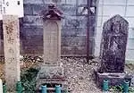
Stay
No bookable places to stay found in Takatori — nearest options in Asuka.
Dining
すこ。
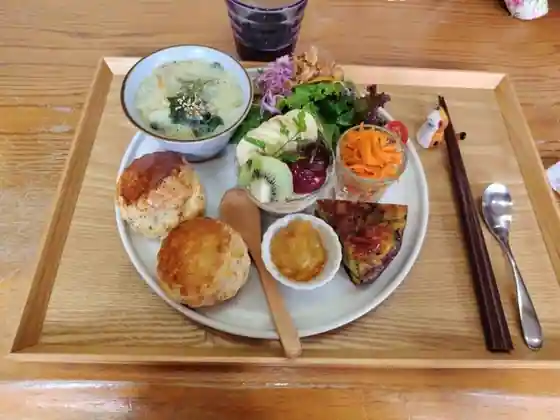
Suko.
町屋Cafe noconoco
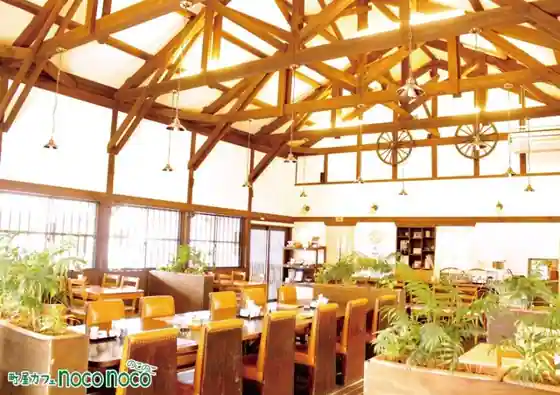
Machiya Cafe noconoco
花水土香
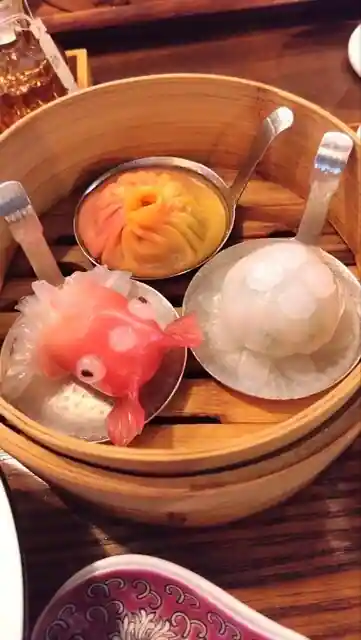
Kasui Tsuchi Kaori
Ma Maison n°8
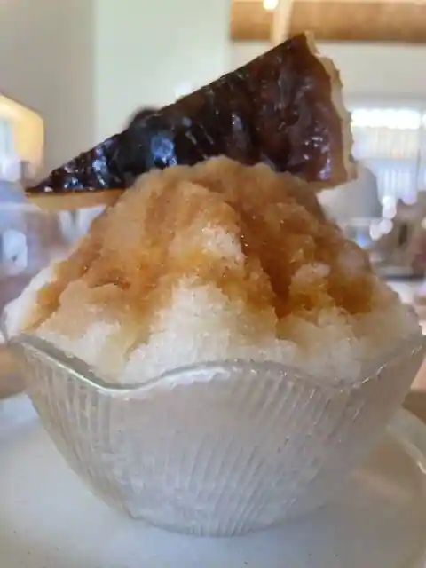
Ma Maison n. 8
茶寮 花大和
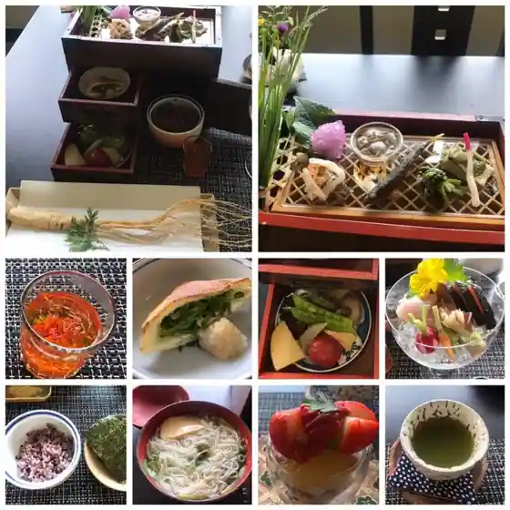
Charyo Hana Yamato
北海道ジンギスカン伸
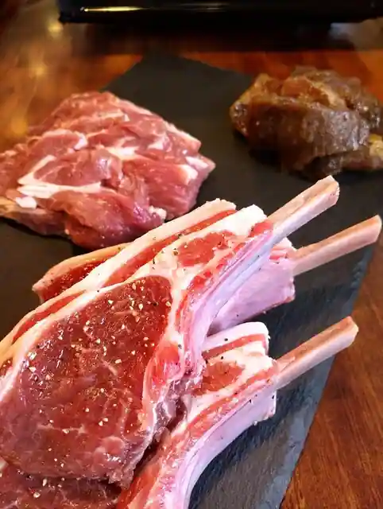
Hokkaido Jingisukan Shin
やまと吉永
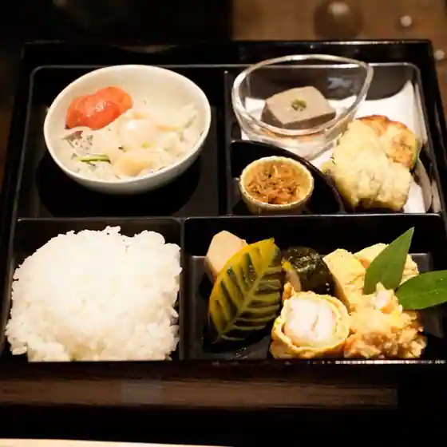
Yamato Yoshinaga
ゆすら梅
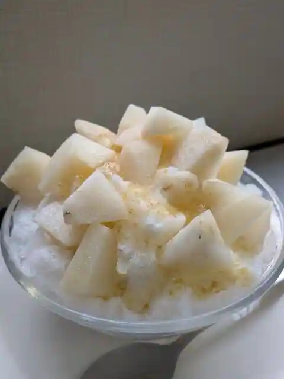
Yusura Ume
そば切り 麓香庵
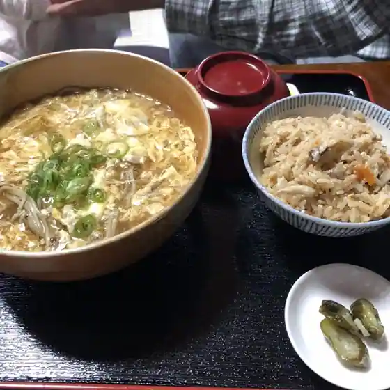
Soba Kiri Fumoto Kaori Iori
つぼさか茶屋
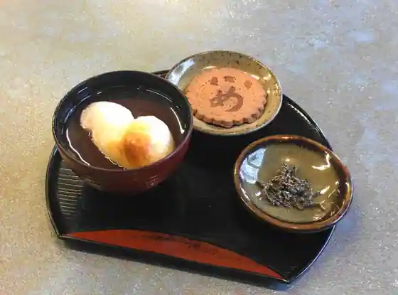
Tsubosaka Chaya
万松
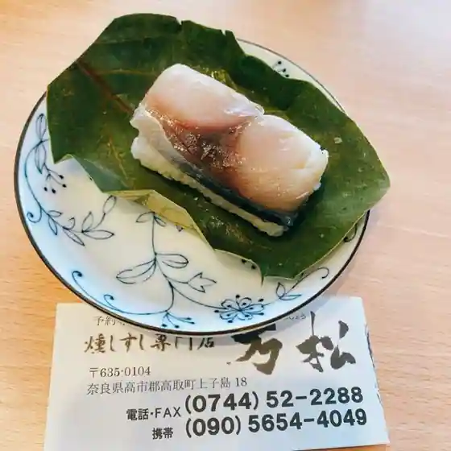
Bansho
居酒屋 久の
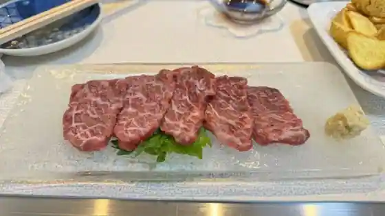
Izakaya Kyu No
ひな家
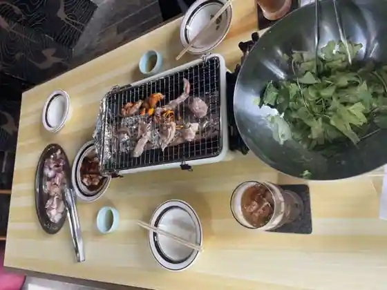
Hina Ie
まちゃポ
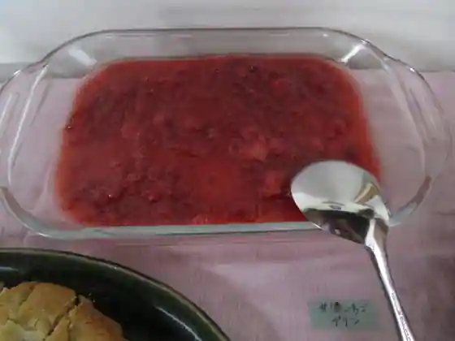
Macha Po
鷹寿司
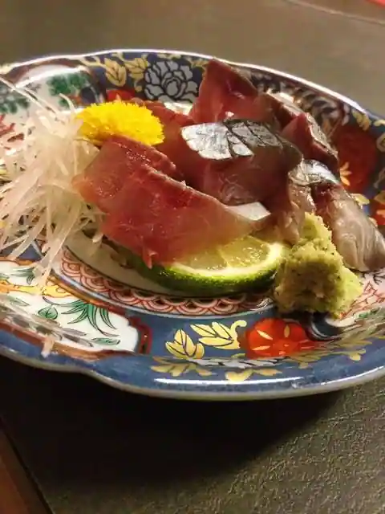
Taka Sushi
みんなの家 ViVi
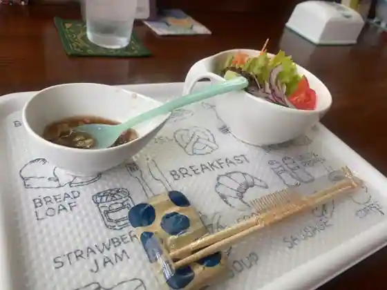
Minnano Ie ViVi
Sights
O Sato, Sawa City no Haka
Koun Zendera
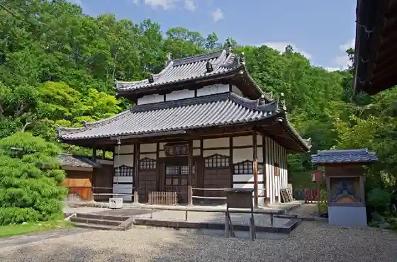
Tsubo Saka Tera
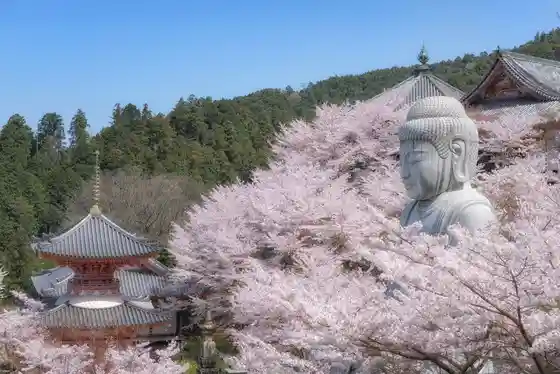
Saruishi (Takatori)
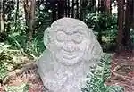
Takatori Tosa
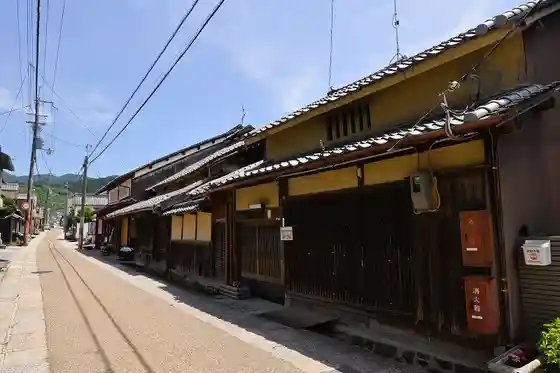
Takatori Tosa Streetscape
Takatori Castle Ruins